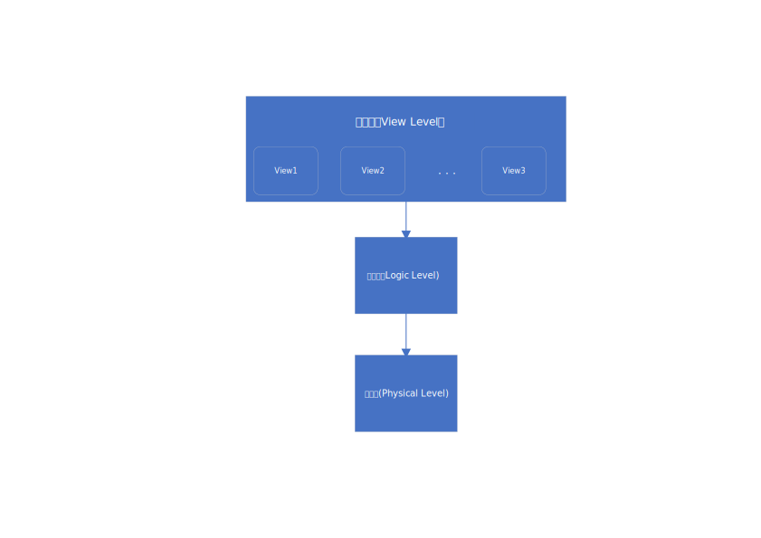

数据库系统概论-介绍
文章目录
数据库系统的目的(Purpose of Database Systems)
在早期，数据库应用程序直接建立在文件系统之上，导致一系列的问题
数据冗余和不一致(
Data redundancy and inconsistency)数据访问难度大(
Difficulty in accessing data)数据隔离(
Data isolation)完整性问题(
Integrity problems)完整性约束(
Integrity constraints)问题难以添加新约束和修改约束
原子性更新(
Atomicity of updates)更新失败可能会导致数据库的数据处于不一致的状态，或者只更新了部分数据
例如: 从一方转账给另一方，只会有完成转账和完全没发生转账两种情况，不会出现转账方转账了但是收款方未收到款项的问题
多用户并发访问(
Concurrent access by multiple users)并发访问需要高性能的支持， 而不受控制的并发访问可能会导致数据不一致
安全问题(
Security problems)文件系统难以提供安全保障
数据库系统就是为了解决这些问题产生的
数据模型(Data Models)
组成
- 一系列用于描述的工具
数据(
Data)数据关系(
Data relationships)- 数据语义(
Data semantics) - 数据约束(
Data constraints)
- 数据语义(
关系模型(
Relational model)实体关系数据模型(
Entity-Relationship data model主要用于数据库设计)基于对象的数据模型(
Object-based data models (Object-oriented and Object-relational))半结构化数据模型(
Semi-structured data model (XML))
数据视图(View of Data)
一个数据库系统的结构如下图 
模式与实例(Instances and Schema)
类似于编程语言中的类型和变量
逻辑模式(logic schema)数据库的总体逻辑结构，类似于程序设计中的变量类型信息物理模式(physical schema)数据库的总体物理结构实例(instance)数据库在特定时间点的实际内容， 类似于变量的值
物理数据独立性(Physical Data Independence)
定义： 在不更改逻辑模式的情况下修改物理模式的能力
应用程序依赖于逻辑模式(
logic schema)一般来说，不同级别和组件应该定义得很好，以便在某些部分中进行更改，不严重影响他人
数据定义语言(Data Definition Language)
定义数据库模式的规范表示法
|
|
DDL编译器生成一组存储表模板信息的数据字典（data dictionary)
数据字典包含元信息(metadata)
- 数据库模式(
database schema) - 完整性约束(
Integrity constraints)- 主键
- 授权(
Authorization)
数据处理语言(Data Manipulation Language)
用于访问和更新由适当数据模型组织的数据的语言（查询语言）
- DML一般分为两种类型
- Pure
- Commercial
- 例如
SQL
结构化查询语言(Structured Query Language, SQL)
SQL查询语言是非过程的查询将多个表（可能只有一个）作为输入，并始终返回一个表(SQL query language is nonprocedural. A query takes as input several tables (possibly only one) and always returns a single table)
数据库设计(Database Design)
逻辑设计(
logic design) – 决定数据库模式业务决定
我们应该在数据库中记录哪些属性
计算机科学决定
我们应该有什么关系模式
属性应该如何分布在不同的关系模式中
物理设计(
physical design) – 决定数据库的物理布局
文章作者 huangkai
上次更新 2018-09-09